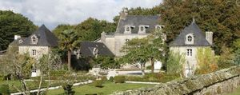
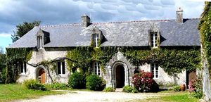
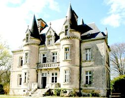
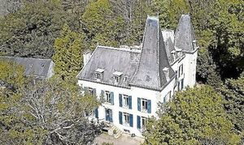
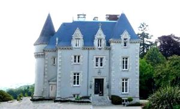
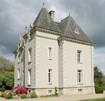
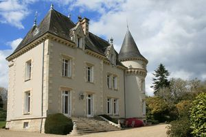
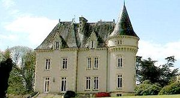
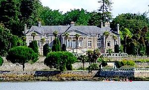

Recensement Jean-Claude Truffet
| Département | 29 — Finistère |
| Canton | Quimper |
| Commune | Quimper |
| Type d'édifice | Château |
| Période d'origine | XVII-XIX-XX |
| Coordonnées GPS | 47° 59' 48" Nord, 4° 05' 47" Ouest Laniron GPS : 47° 58' 33,68" Nord, 4° 06' 38,38" Ouest KIrrien GPS : 47° 59' 13" Nord, 4° 07' 12" Ouest |









Cinq châteaux à Quimper; Kérivoal, Kerrien, Kistinic, Lanniron, et Toulven. KERIVOAL, édifice construit au cours du XIXe siècle, agrandi par l'adjonction d'une tour d'angle couverte en pavillon à la fin du siècle. Le château appartient à M. A. de Montluc de la Rivière au début du XXe siècle. Bâtiment de plan rectangulaire, l'élévation de type ternaire est accentuée par un corps d'entrée légèrement saillant couvert en pavillon. Le corps de logis est accosté d'une tour de plan carré, également couverte en pavillon. Maçonnerie enduite avec encadrements de baies et chaîne d'angle en pierre de taille. KERRIEN, édifice hétérogène pouvant avoir été construit dans la première moitié du XIXe siècle et agrandi par l'adjonction de pavillons latéraux et le doublement du corps de logis. Il appartient à M. le comte J. d'Amphernet au début du XXe siècle. Corps de logis principal à élévation ordonnancée et régulière, encadré de deux ailes en rez-de-chaussée formant retour d'équerre sur chaque façade. La façade postérieure présente une adjonction accolée au corps de logis principal; les toitures, disposées perpendiculairement à l'axe longitudinal de l'édifice, forment deux légers pignons en façade; un bow-window polygonal supporté par des piles occupe le centre de ce dispositif. KISTINIC, construit au cours de la deuxième moitié du XIXe siècle dans le style néo-gothique. Il appartient à M. L. Cosset au début du XXe siècle. Bâtiment de style néo-gothique, de plan massé irrégulier, le corps de bâtiment principal est encadré de plusieurs pavillons et d'une tour circulaire. La maçonnerie est enduite avec encadrements de baies, corniche à modillons en pierre de taille, les lucarnes sont surmontées de fronton à gâble, la porte d'entrée d'une accolade.
LANNIRON, ancienne résidence d'été des évêques de Quimper au bord de l'Odet à proximité immédiate de l'agglomération, résidence des évêques de Cornouaille au XVe siècle Mgr Gatien de Monceaux et son successeur Mgr de Rosmadec qui fit construire le château et au XVIIe siècle Mgr François de Coetlogon, fait aménager les jardins En 1791 le domaine est acquis par sieur Mallin. qui le conserve jusqu'en 1805 date de la vente à François-Marie-Léon Toussaint Tréverret en faillitte en 1809 adjugé à M. Guillaume-Marie Kerbriand -Postic négociant à Morlaix. Mgr de Farcy de Cuillé évêque fait construire en prolongement côté ouest .En 1811 achat du domaine par la famille de Charles Kerret de Quillien, M. Emmanuel alixte Harrington, notable d'origine anglaise, entreprit entre 1824 et 1833 une importante restauration de l'ancien manoir de la fin du XVe siècle et agrandi une première fois dans les années 1760, à sa mort d'Emmanuel le domaine rest revendu aux Krerret de Quillien passe aux Massol de Rebetz descendant direct et propriétaire aujourd'hui au XVIIIe siècle. C'est sous l'aspect d'une construction de style napoléonien que l'édifice apparaît à nos yeux aujourd'hui. Vers 1824 construction d'un avant corps de style palladien. De ces jardins restent plusieurs bassins, une pièce d'eau appelée le Neptune et un ancien canal.
Éléments protégés MH : les façades et les toitures du château, les terrasses, le bassin de Neptune, la grande allée donnant accès au domaine au Nord, la façade sud de l'Orangerie : inscription par arrêté du 6 mai 1988. Le parterre, l'allée des chevaux, le canal et la terrasse de l'orangerie, l'orangerie et le bâtiment des communs : inscription par arrêté du 23 décembre 1992 .
Kerioval; M. A. de Montluc de la Rivière Kerien; M. le comte J. d'Amphernet Kistinic ;M. L. Cosset Lanniron ;Mgr Gatien de Monceaux
"
Cinq châteaux à Qimper; Kérioval grav-1, Kerrien grav-2-3, Kistinic grav-5-6-7-8 Lanniron grav-9, et Toulven. Kistinic GPS : 47° 59' 48" Nord, 4° 05' 47" Ouest Laniron GPS : 47° 58' 33,68" Nord, 4° 06' 38,38" Ouest KIrrien GPS : 47° 59' 13" Nord, 4° 07' 12" Ouest